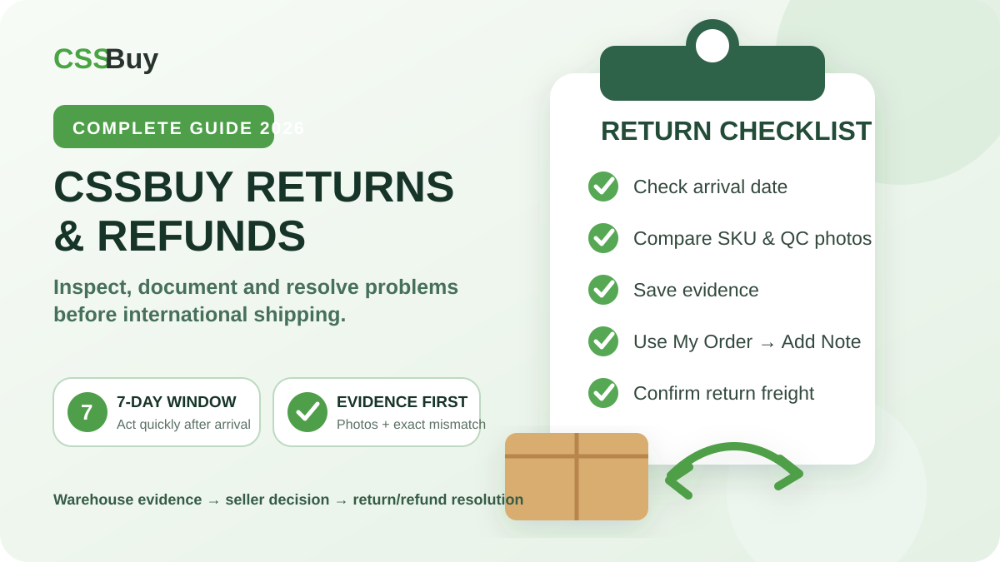

CSSBuy Returns & Refunds Guide 2026: The Warehouse Evidence Workflow
A return is not a button you press after deciding you no longer want an item. In a China-agent workflow, it is a short decision window that sits between seller policy, warehouse evidence and your own timing. CSSBuy’s current public information makes that especially important: when return conditions are met, the item generally needs to have been in the warehouse for fewer than seven days, the seller needs to accept the return, and the buyer is responsible for the return shipping fee. CSSBuy also says most Taobao and 1688 products support a seven-day no-reason return policy, but that does not make every order automatically returnable.
The practical lesson is simple. A strong buyer does not wait until parcel submission to decide whether an item is acceptable. The return decision starts the day the order changes to “In Warehouse.”
Think of a CSSBuy return as a three-party transaction
There are three parties in the decision: you, CSSBuy and the marketplace seller. CSSBuy is the purchasing and warehouse intermediary. It can inspect the item, photograph it, communicate with the seller and handle a return when the conditions are satisfied. The seller still controls whether a specific order is eligible for return, especially when a listing carries special terms. You control how quickly and clearly you present the problem.
That distinction matters because CSSBuy’s product pages state that goods come from third-party shopping platforms and buyers should independently assess risks such as quality and authenticity. The right question is therefore not simply “Can CSSBuy return this?” It is “Is this order still returnable, and can I show the problem clearly while the seller’s window is still open?”
The seven-day clock should change how you inspect warehouse arrivals
CSSBuy’s current Q&A says it can help return an item when the return conditions are met, the order has been in the warehouse for less than seven days, and the return shipping fee is paid. Its About page separately says buyers who consider an item below their required standard can return it to the seller within seven days.
Treat the first warehouse week as an inspection sprint, not storage time.
When an order arrives, compare it immediately with the purchase record. Confirm product identity, color, size, model, quantity and visible condition. CSSBuy says its free product inspection can cover details such as style, quantity, color, size, model and damage. Those checks are useful, but they do not know every detail that mattered to your purchase.
A warehouse photo can show that a shoe is black. It cannot know that you intended a specific outsole, that a logo position mattered, or that the seller promised an extra accessory. Compare the item with your chosen SKU, order notes and any seller commitment that affected the purchase.
Build an evidence packet before you complain
Weak return requests create extra messages. Strong requests make the issue obvious.
Start with the order number. Add the ordered specification if the option matters. Identify the warehouse photo that shows the problem. Then describe the mismatch in one sentence.
“Wrong color” is vague. “Ordered dark grey; warehouse photo 3 shows light beige” is useful.
“Bad quality” is subjective. “Left sleeve seam is open in warehouse photo 5” gives CSSBuy something concrete to present to the seller.
If the problem is size, missing accessories or quantity, state the exact expected and received values. The goal is to reduce interpretation. The faster CSSBuy and the seller understand the issue, the less of the return window is spent clarifying what you mean.
Use My Order for order problems
CSSBuy’s current service page directs purchase, shipment verification, return and refund questions to “My Order,” where the buyer can open the relevant order and use “Add Note.” Keep a return discussion there so the message stays attached to the purchase.
Write the note like a warehouse instruction, not a customer-service essay. Put the desired outcome first: return, exchange, seller clarification or additional checking. Then give the reason and evidence.
For example: “Please request a return. Ordered size L, but the warehouse tag in photo 2 shows M. Please confirm seller acceptance and tell me the domestic return shipping cost before proceeding.”
That gives the agent an action, a reason and a verification point.
Do not assume “seven-day no-reason return” means zero cost
CSSBuy’s public Q&A specifically lists return shipping fees among the conditions for a return. Buyers often overlook this because they focus on the product price.
For a low-cost item, domestic return freight can be a meaningful part of the purchase value. Compare the cost of returning it with the cost of keeping it, replacing it or shipping it with the rest of the haul. This is not an argument for accepting defective goods; it is a reminder to make the decision on total cost.
Ask for the domestic return cost before confirming the action when that amount could change your choice.
Treat no-return warnings as a purchase-stage decision
Current CSSBuy product pages can display a warning that the buyer has accepted a no-return condition. The page explains that CSSBuy may try to return the item, but if the seller does not agree, the return cannot be guaranteed.
That is not a detail to discover after warehouse arrival.
Before paying, read any return-risk warning on the product page. If the product is custom, clearance, hygiene-sensitive, made to order or sold under special terms, assume the after-sales path may be narrower until the live order confirms otherwise.
When return flexibility is limited, improve the purchase instruction. Specify exact size, color, model, quantity and any non-obvious requirement. Prevention is cheaper than arguing about a non-returnable mismatch.
1688 orders need a different mindset
CSSBuy’s Buy For Me instructions state that 1688 purchases have a different quality-control standard, and CSSBuy warns that many 1688 products have minimum order quantities. That reflects the platform’s wholesale orientation.
Do not assume a Taobao-style retail experience. Verify minimum quantity before payment, record the exact variants and unit count, and inspect the warehouse arrival as a batch. If you bought four units, confirm all four. If colors were mixed, check the distribution. If the listing describes wholesale packaging, do not confuse basic bulk packing with product damage.
Most importantly, do not wait for the rest of the haul before reviewing the batch. The same return-clock logic still applies.
Separate warehouse returns from international parcel problems
Once you submit an accepted item for international delivery, the problem changes category.
CSSBuy’s Buy For Me workflow says that after warehouse inspection you select items for delivery, choose a shipping method and can request services such as packaging removal, reinforcement and insurance. It also states that international shipping can involve delays, customs events, damage or missing parcels, and that CSSBuy cannot control third-party logistics companies or customs.
If the issue is visible before international shipment, solve it at the order level. If the problem appears after dispatch, use the parcel level. CSSBuy’s service page directs tracking, logistics updates and parcel details to “My Parcel,” again using “Add Note.”
A wrong-size item seen in warehouse photos is an order problem. A parcel damaged during international transport is a parcel problem. Keeping the channel correct makes the case easier to follow.
Use packaging services as prevention
CSSBuy currently offers packaging removal, reinforcement and insurance during the delivery stage. These are risk controls, not substitutes for inspection.
If an item is fragile, describe the risk before parcel submission. If you are shipping a structured bag, do not request aggressive compression merely to reduce volume. If you are shipping a fragile object, reinforcement may matter more than minimizing every centimeter.
Good instructions are specific. “Reinforce the outer carton and protect the ceramic item with bubble material” is actionable. “Pack safely” leaves too much interpretation.
A five-step return routine
Use the same routine whenever an order reaches the warehouse.
First, record the warehouse arrival date.
Second, compare the item with the order specification and warehouse photos immediately. Check identity, option, quantity, condition and promised accessories.
Third, classify the problem. Is it a clear seller mismatch, visible defect, subjective preference issue or shipping-risk concern?
Fourth, create a short evidence packet and contact CSSBuy through the relevant order’s Add Note function. Ask for the exact outcome you want and confirm any domestic return cost.
Fifth, do not submit the item for international delivery until the return or exchange decision is finished.
Frequently Asked Questions
How long do I have to request a CSSBuy return?
CSSBuy’s current public guidance says that, when return conditions are met, the item should have been in the warehouse for fewer than seven days. Seller policy and product terms still matter, so review the order immediately after warehouse arrival.
Does CSSBuy guarantee every Taobao or 1688 product can be returned?
No. CSSBuy says most products on Taobao and 1688 support seven-day no-reason returns, but individual seller terms and no-return conditions can override that expectation.
Who pays the return shipping fee?
CSSBuy’s current Q&A lists payment of the return shipping fee as one of the conditions for processing a return.
Where should I contact CSSBuy about a return or refund?
CSSBuy directs order enquiries, including returns and refunds, to My Order. Open the relevant order and use Add Note.
What evidence should I provide?
Use the order number, the ordered specification, the relevant warehouse photo and one concise sentence explaining the mismatch or defect. Add measurements or accessory details when needed.
Should I wait for the rest of my haul?
No. Storage time and return time are different. You may have much longer warehouse storage available, but the return window can be far shorter.
What if the seller does not accept returns?
If the order carries a no-return condition, CSSBuy may still try to negotiate, but current product-page warnings make clear that seller refusal can prevent the return.
What if the problem appears after international shipping?
Use the relevant parcel in My Parcel and Add Note for after-sales support. International transport problems are separate from warehouse-level seller returns.
The return decision is won before the deadline
Warehouse arrival is the moment when you have the most useful combination of evidence, control and options. CSSBuy gives buyers an inspection layer between the Chinese seller and international shipment, but that layer only works if you use it quickly.
Review every arrival, document specific problems, keep communication attached to the order, understand the domestic return cost, and finish after-sales decisions before parcel submission.
A disciplined return workflow is not about returning more products. It is about making fewer expensive mistakes. When every item has been deliberately accepted before it crosses the border, the rest of the haul becomes easier to plan, easier to pack and less stressful to receive.